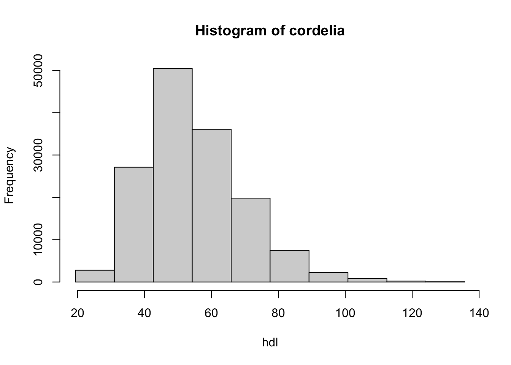

install.packages("devtools")
library(devtools)
devtools::session_info()DataSHIELD Workshop: Use case CORDELIA cohort
üì• Download R Script
Want to work with a pure R script? You can download the complete R code from this workshop:
üìÑ Download workshop_cordelia.R
This file contains all the R code chunks from this workshop in a clean, executable script format.
üìö INFORMATION FOR NEWCOMERS TO RSTUDIO NOTEBOOKS
This is an R Markdown Notebook. When you execute code within the notebook, the results appear beneath the code.
Try executing this chunk by clicking the Run button within the chunk or by placing your cursor inside it and pressing Ctrl+Shift+Enter.
DataSHIELD for analyzing CORDELIA data
üìã Workshop Overview
The plan for this workshop is as follows:
- Installing DataSHIELD
- Logging in and assigning data
- Describing data
- Manipulating data
- Subsetting data
- Data manipulation with dsHelper
- Making graphs
- Performing regression analysis
- Practical exercises
Installing DataSHIELD
Firstly: check whether we have the right R packages installed to run DataSHIELD: using the very helpful devtools package (which has already been installed for us by Stuart!), we’ll use the “Session info” command:
We are missing some of the necessary packages: “DSI”, “DSOpal” and “dsBaseClient”.
install.packages('DSI')
install.packages('DSOpal')
install.packages('dsBaseClient', repos=c(getOption('repos'), 'http://cran.datashield.org'), dependencies=TRUE)
install.packages("metafor")
devtools::install_github("timcadman/ds-helper")Remember to load them into this R session using “library()” command:
library(DSI)
library(DSOpal)
library(dsBaseClient)
library(dsHelper)
library(metafor)Check that they have now been added:
devtools::session_info()Logging in and assigning data
The login script has to be customized to fit the data you are trying to connect to.
The “builder <-” and “builder$append” functions are standard features.
üîí Data Privacy Note
For this demonstration we are connecting to simulated data- but if it was data of real people, it would be very important for us not to be able to see individual patients’ information.
üåê Opal Access
Let’s log in to the opal online portal to see what data there is available: https://opal-demo.obiba.org/#/project/CORDELIA
We will use a subset of CORDELIA data set, in a data.frame with 196633 individuals of 38 harmonized variables. This dataset does contain some NA values.
For the ease of this workshop, we’ll imagine that the data is hosted in a single Opal repository. The below code creates a local R object with the login details for each study:
builder <- DSI::newDSLoginBuilder()
builder$append(
server = "cordelia",
url = "https://opal-demo.obiba.org",
user = "dsuser",
password = "P@ssw0rd",
resource = "CORDELIA.cordelia44",
)
logindata <- builder$build()Now we need to connect, referring to the login information in the data frame we have just created:
conns <- DSI::datashield.login(logins = logindata,
assign = TRUE,
symbol = "res")The ‘assign’ argument can be set to either ‘TRUE’ or ‘FALSE’. If set to ‘TRUE’, all the available variables within that table will be assigned to a serverside data frame and available to access. If you only need a small subset of available variables it can be preferable to set this to ‘FALSE’ and later use the function ‘datashield.assign’ to separately assign only the variables you need. The output of this box has useful progress bars which show the progress of connecting to studies, one by one.
We can see the serverside object that has been created by running:
ds.ls()$cordelia
$cordelia$environment.searched
[1] "R_GlobalEnv"
$cordelia$objects.found
[1] "res"We can see the type of object we have
ds.class("res")$cordelia
[1] "RDSFileResourceClient" "FileResourceClient" "ResourceClient"
[4] "R6"
üìã Resources vs Tables
Here you see one ‘resource’ rather than a dataframe in each study called ‘D’. NOTE, if data would be stored as a Table rather than a ‘resource’ (e.g. csv file) we would get directly ‘D’ as a table. You can see the example in our bookdown: https://isglobal-brge.github.io/resource_bookdown/datashield.html#demo
Now we need to ‘resolve’ the resource. That is, import the object into R. In that case, as the resource is an R object, internally readRDS function is called, but it is not necessary to be executed. Instead we use the function as.resource.data.frame():
DSI::datashield.assign.expr(conns = conns,
symbol = "D",
expr = quote(as.resource.data.frame(res)))Now, we can see that we have a data.frame in the server side:
ds.ls()$cordelia
$cordelia$environment.searched
[1] "R_GlobalEnv"
$cordelia$objects.found
[1] "D" "res"and the data.frame has these variables
ds.summary("D")$cordelia
$cordelia$class
[1] "data.frame"
$cordelia$`number of rows`
[1] 196633
$cordelia$`number of columns`
[1] 38
$cordelia$`variables held`
[1] "cohorte" "codigo" "fec_inc" "edad"
[5] "sexo" "est_civ" "niv_cult" "act_fis"
[9] "fumador" "HTA" "HTA_TTO" "hipercol"
[13] "col_tto" "diabetes" "diab_tto" "insulin"
[17] "diab_ado_ins" "peso" "talla" "cintura"
[21] "IMC" "FC" "PAS_1" "PAS_2"
[25] "PAD_1" "PAD_2" "col_tot" "hdl"
[29] "ldl" "trig" "creat" "filt_glomer"
[33] "glu" "exitusSeg" "FechaExit_Seg" "filt_glomer_CKD"
[37] "HTA_tot" "diabetes_tot" Describing data (‘aggregate-type functions’)
üìñ DataSHIELD Exploration Functions
There are many data exploration functions already implemented into DataSHIELD: let’s check it out at the wiki https://data2knowledge.atlassian.net/wiki/spaces/DSDEV/pages/2733244417/Version+6.2.0
Scroll down to “Data structure queries”. Let’s try out a few of these:
ds.dim(x="D", datasources = conns)
ds.colnames(x="D", datasources = conns)$`dimensions of D in cordelia`
[1] 196633 38
$`dimensions of D in combined studies`
[1] 196633 38
$cordelia
[1] "cohorte" "codigo" "fec_inc" "edad"
[5] "sexo" "est_civ" "niv_cult" "act_fis"
[9] "fumador" "HTA" "HTA_TTO" "hipercol"
[13] "col_tto" "diabetes" "diab_tto" "insulin"
[17] "diab_ado_ins" "peso" "talla" "cintura"
[21] "IMC" "FC" "PAS_1" "PAS_2"
[25] "PAD_1" "PAD_2" "col_tot" "hdl"
[29] "ldl" "trig" "creat" "filt_glomer"
[33] "glu" "exitusSeg" "FechaExit_Seg" "filt_glomer_CKD"
[37] "HTA_tot" "diabetes_tot"
⚙️ Optional Parameters
NOTE: writting datasources = conns is not required. This is just to emphasize that if you have several connections you need to specify which one is yours. By default, it missing it looks for your local environment
ls()[1] "builder" "conns" "logindata"So, this would also work
ds.dim("D")
ds.colnames("D")$`dimensions of D in cordelia`
[1] 196633 38
$`dimensions of D in combined studies`
[1] 196633 38
$cordelia
[1] "cohorte" "codigo" "fec_inc" "edad"
[5] "sexo" "est_civ" "niv_cult" "act_fis"
[9] "fumador" "HTA" "HTA_TTO" "hipercol"
[13] "col_tto" "diabetes" "diab_tto" "insulin"
[17] "diab_ado_ins" "peso" "talla" "cintura"
[21] "IMC" "FC" "PAS_1" "PAS_2"
[25] "PAD_1" "PAD_2" "col_tot" "hdl"
[29] "ldl" "trig" "creat" "filt_glomer"
[33] "glu" "exitusSeg" "FechaExit_Seg" "filt_glomer_CKD"
[37] "HTA_tot" "diabetes_tot"
✅ Mandatory Syntax
What it is mandatory is to write the name of the data.frame with ““.
We’re going to be focus on hdl_cholesterol.
This is a measure of HDL Cholesterol (aka the “good cholesterol” level)
Let’s run some summary statistic commands
ds.class(x='D$hdl', datasources = conns)
ds.length(x='D$hdl', datasources = conns)
ds.mean(x='D$hdl', datasources = conns)$cordelia
[1] "numeric"
$`length of D$hdl in cordelia`
[1] 196633
$`total length of D$hdl in all studies combined`
[1] 196633
$Mean.by.Study
EstimatedMean Nmissing Nvalid Ntotal
cordelia 54.71801 49616 147017 196633
$Nstudies
[1] 1
$ValidityMessage
ValidityMessage
cordelia "VALID ANALYSIS"What is this other function to obtain the mean? Let’s use the DataSHIELD function help documentation.
?ds.quantileMeanNow, putting into action some of what we’ve learned about the function arguments. NOTE: ‘split’ is in case you have data from different servers and you want to see the statistic one by one.
ds.quantileMean(x='D$hdl', datasources = conns)
ds.quantileMean(x='D$hdl',type = "split", datasources = conns) 5% 10% 25% 50% 75% 90% 95% Mean
34.20000 38.00000 44.00000 53.00000 63.00000 74.00000 82.00000 54.71801
$cordelia
5% 10% 25% 50% 75% 90% 95% Mean
34.20000 38.00000 44.00000 53.00000 63.00000 74.00000 82.00000 54.71801 Trying to calculate the variance of HDL Cholesterol:
?ds.vards.var(x = "D$hdl", type = "split", datasources = conns)$Variance.by.Study
EstimatedVar Nmissing Nvalid Ntotal
cordelia 214.2793 49616 147017 196633
$Nstudies
[1] 1
$ValidityMessage
ValidityMessage
cordelia "VALID ANALYSIS"Can we store the results calculated from a DataSHIELD analysis in a local R session?
Yes- the output of aggregate functions are always R objects, hence can be stored.
a<-ds.var(x = "D$hdl", type = "split", datasources = conns)[[1]]
a
b<-ds.var(x = "D$hdl", type = "split", datasources = conns)[[1]][[1,1]]
b EstimatedVar Nmissing Nvalid Ntotal
cordelia 214.2793 49616 147017 196633
[1] 214.2793The square brackets are because we are trying to access an element of a list- which is the R object that DataSHIELD aggregate functions output as.
Factor variables visualize by simply writting
ds.table("D$sexo")
Data in all studies were valid
Study 1 : No errors reported from this study
$output.list
$output.list$TABLE_rvar.by.study_row.props
study
D$sexo cordelia
Hombre 1
Mujer 1
NA NaN
$output.list$TABLE_rvar.by.study_col.props
study
D$sexo cordelia
Hombre 0.4633861
Mujer 0.5366139
NA 0.0000000
$output.list$TABLE_rvar.by.study_counts
study
D$sexo cordelia
Hombre 91117
Mujer 105516
NA 0
$output.list$TABLES.COMBINED_all.sources_proportions
D$sexo
Hombre Mujer NA
0.463 0.537 0.000
$output.list$TABLES.COMBINED_all.sources_counts
D$sexo
Hombre Mujer NA
91117 105516 0
$validity.message
[1] "Data in all studies were valid"Using dsHelper to retrieve statistics in a neater format.
As you may have noticed, some operations which are more straightforward in R can be more complicated in datashield. To help with this, the dsHelper package allows you to do some common operations in fewer lines of code. DsHelper is an entirely serverside package - it contains only clientside functions which call DataSHIELD functions serverside.
We have seen datashield has a range of functions to retrieve statistics, but is limited in that (i) you need to use different functions for different statistics, (ii) you can only get stats for one variable at a time. dh.GetStats returns many useful stats in a tibble, and allows you to retrieve stats for multiple variables at a time.
neat_stats <- dh.getStats(
df = "D",
vars = c("edad", "HTA", "hdl", "ldl", "trig", "creat",
"IMC", "talla", "cintura", "peso", "col_tto",
"diabetes", "diab_tto", "insuline", "FC"))
neat_statsLet us see what happened:
datashield.errors()Manipulating data (‘assign-type’ functions)
Assign-type functions are ones where a calculation is done on the data stored at the server (and results of that calculation are “assigned” to a serverside variable, and saved there), but is NOT transmitted back to the user.
The reason for this is that some calculations could be highly disclosive- and if such data were transmitted to the analyst, with not much effort at all, with an inverse function, the analyst could work out exactly what the raw data are- and thus the data’s privacy is broken!
To demonstrate:
ds.ls(datasources = conns)
ds.log(x='D$hdl', newobj='hdl_log', datasources = conns)
ds.ls(datasources = conns)
ds.mean(x="hdl_log",datasources= conns)
ds.mean(x="D$hdl",datasources= conns)$cordelia
$cordelia$environment.searched
[1] "R_GlobalEnv"
$cordelia$objects.found
[1] "D" "res"
$cordelia
$cordelia$environment.searched
[1] "R_GlobalEnv"
$cordelia$objects.found
[1] "D" "hdl_log" "res"
$Mean.by.Study
EstimatedMean Nmissing Nvalid Ntotal
cordelia 3.967543 49616 147017 196633
$Nstudies
[1] 1
$ValidityMessage
ValidityMessage
cordelia "VALID ANALYSIS"
$Mean.by.Study
EstimatedMean Nmissing Nvalid Ntotal
cordelia 54.71801 49616 147017 196633
$Nstudies
[1] 1
$ValidityMessage
ValidityMessage
cordelia "VALID ANALYSIS"The second “ds.mean” shows that the mean of the logged values are definitely smaller, by about the right amount. The DataSHIELD log function has worked.
There is another DataSHIELD assign function that can be used for data transformations - a square root function. Let’s test again:
ds.sqrt(x='D$hdl', newobj='hdl_sqrt', datasources = conns)
ds.ls(datasources = conns)
ds.mean(x="hdl_sqrt",datasources= conns)
ds.mean(x="D$hdl",datasources= conns)$cordelia
$cordelia$environment.searched
[1] "R_GlobalEnv"
$cordelia$objects.found
[1] "D" "hdl_log" "hdl_sqrt" "res"
$Mean.by.Study
EstimatedMean Nmissing Nvalid Ntotal
cordelia 7.333391 49616 147017 196633
$Nstudies
[1] 1
$ValidityMessage
ValidityMessage
cordelia "VALID ANALYSIS"
$Mean.by.Study
EstimatedMean Nmissing Nvalid Ntotal
cordelia 54.71801 49616 147017 196633
$Nstudies
[1] 1
$ValidityMessage
ValidityMessage
cordelia "VALID ANALYSIS"These new objects are not attached to a dataframe. Use the help function to find out about the ds.dataFrame function, which can be used to combine objects.
Now join “hdl_sqrt” and “hdl_log” to the dataframe “D”.
ds.dataFrame(c("D", "hdl_sqrt", "hdl_log"), newobj = "D")
ds.colnames("D")$is.object.created
[1] "A data object <D> has been created in all specified data sources"
$validity.check
[1] "<D> appears valid in all sources"
$cordelia
[1] "cohorte" "codigo" "fec_inc" "edad"
[5] "sexo" "est_civ" "niv_cult" "act_fis"
[9] "fumador" "HTA" "HTA_TTO" "hipercol"
[13] "col_tto" "diabetes" "diab_tto" "insulin"
[17] "diab_ado_ins" "peso" "talla" "cintura"
[21] "IMC" "FC" "PAS_1" "PAS_2"
[25] "PAD_1" "PAD_2" "col_tot" "hdl"
[29] "ldl" "trig" "creat" "filt_glomer"
[33] "glu" "exitusSeg" "FechaExit_Seg" "filt_glomer_CKD"
[37] "HTA_tot" "diabetes_tot" "hdl_sqrt" "hdl_log"
üèãÔ∏è Exercise
EXERCISE: Using some of the functions above, explore the distribution of the variable “PM_BMI_CATEGORICAL” in dataframe “D”.
Here you see this has returned a list of two tibbles separated into continuous and categorical information. For the categorical variables info is returned on ns, percentages and missingness within each category, whilst for continuous variables info is returned on mean, standard deviation, quantiles and also missingness.
Sub-setting data
üìñ About Subsetting
In DataSHIELD there is one function that allows sub-setting of data, ds.dataFrameSubset.
You may wish to use it to: - Subset a column of data by its “Class” - Subset a dataframe to remove any “NA”s
- Subset a numeric column of a dataframe using a Boolean inequality
# first find the column name you wish to refer to
ds.colnames(x="D")
# then check which levels you need to apply a boolean operator to:
ds.levels(x="D$sexo")
?ds.dataFrameSubset$cordelia
[1] "cohorte" "codigo" "fec_inc" "edad"
[5] "sexo" "est_civ" "niv_cult" "act_fis"
[9] "fumador" "HTA" "HTA_TTO" "hipercol"
[13] "col_tto" "diabetes" "diab_tto" "insulin"
[17] "diab_ado_ins" "peso" "talla" "cintura"
[21] "IMC" "FC" "PAS_1" "PAS_2"
[25] "PAD_1" "PAD_2" "col_tot" "hdl"
[29] "ldl" "trig" "creat" "filt_glomer"
[33] "glu" "exitusSeg" "FechaExit_Seg" "filt_glomer_CKD"
[37] "HTA_tot" "diabetes_tot" "hdl_sqrt" "hdl_log"
$cordelia
$cordelia$Levels
[1] "Hombre" "Mujer" "No binario"
$cordelia$ValidityMessage
[1] "VALID ANALYSIS"Splitting into SEX groups, assigned to different server-side objects.
ds.dataFrameSubset(df.name = "D",
V1.name = "D$sexo",
V2.name = "Hombre",
Boolean.operator = "==",
newobj = "cordelia.subset.Hombres", datasources= conns)
ds.dataFrameSubset(df.name = "D",
V1.name = "D$sexo",
V2.name = 'Mujer',
Boolean.operator = "==",
newobj = "cordelia.subset.Mujeres",datasources= conns)Now there are two serverside objects which have split GENDER by class, to which we have assigned the names “cordelia.subset.Hombres” and “cordelia.subset.Mujeres”.
Sub-setting to remove NAs
ds.completeCases(x1="D", newobj="D_without_NA", datasources=conns)$is.object.created
[1] "A data object <D_without_NA> has been created in all specified data sources"
$validity.check
[1] "<D_without_NA> appears valid in all sources"Sub-setting by inequality
Say we wanted to have a subset of patients where BMI values are ≥ 25, and call it subset.BMI.25.plus
ds.dataFrameSubset(df.name = "D",
V1.name = "D$IMC",
V2.name = "25",
Boolean.operator = ">=",
newobj = "subset.IMC.25.plus",
datasources = conns)$is.object.created
[1] "A data object <subset.IMC.25.plus> has been created in all specified data sources"
$validity.check
[1] "<subset.IMC.25.plus> appears valid in all sources"Checking we have successfully created such an object, using quantiles and histograms:
ds.quantileMean(x="subset.IMC.25.plus$IMC",
datasources= conns)
ds.histogram(x="subset.IMC.25.plus$IMC", datasources = conns) 5% 10% 25% 50% 75% 90% 95% Mean
25.39000 25.79000 26.93000 28.89000 31.63000 34.87000 37.13000 29.75356
$breaks
[1] 24.20418 27.00101 29.79785 32.59468 35.39151 38.18835 40.98518 43.78201
[9] 46.57885 49.37568 52.17251
$counts
[1] 35859 47084 29001 14540 6759 2965 1248 512 244 42
$density
[1] 0.0927371879 0.1217668579 0.0750012880 0.0376027974 0.0174798699
[6] 0.0076679707 0.0032275303 0.0013241150 0.0006310236 0.0001086188
$mids
[1] 25.60260 28.39943 31.19626 33.99310 36.78993 39.58676 42.38360 45.18043
[9] 47.97726 50.77409
$xname
[1] "xvect"
$equidist
[1] TRUE
attr(,"class")
[1] "histogram"Sub-setting by multiple conditions
If we want to create a subset based on multiple conditions we can use the ds.Boole function before subsetting. For example, let’s say that we want to create a subset of individuals where BMI values are ≥ 25 and adjusted glucose is lower than 6.
ds.Boole(
V1 = "D$IMC",
V2 = "25",
Boolean.operator = ">=",
numeric.output = TRUE,
newobj = "IMC.25.plus",
datasources = conns)
ds.Boole(
V1 = "D$glu",
V2 = "90",
Boolean.operator = "<",
numeric.output = TRUE,
newobj = "glu.90.less",
datasources = conns)$is.object.created
[1] "A data object <IMC.25.plus> has been created in all specified data sources"
$validity.check
[1] "<IMC.25.plus> appears valid in all sources"
$is.object.created
[1] "A data object <glu.90.less> has been created in all specified data sources"
$validity.check
[1] "<glu.90.less> appears valid in all sources"We can then use the ds.make function to make a new categorical variable which combines these groups:
?ds.make
ds.make(toAssign = "IMC.25.plus+glu.90.less",
newobj = "IMC.25.plus_glu.90.less",
datasources = conns)
# If BMI >= 25 and glucose < 6, then BMI.25.plus_GLUC.6.less=2
# If BMI >= 25 and glucose >= 6, then BMI.25.plus_GLUC.6.less=1
# If BMI < 25 and glucose < 6, then BMI.25.plus_GLUC.6.less=1
# If BMI < 25 and glucose >= 6, then BMI.25.plus_GLUC.6.less=0
ds.table(rvar= "IMC.25.plus_glu.90.less",
datasources = conns)
ds.dataFrame(x=c("D", "IMC.25.plus_glu.90.less"), newobj = "D2")
ds.colnames("D2")
ds.dataFrameSubset(df.name = "D2",
V1.name = "D2$IMC.25.plus_glu.90.less",
V2.name = "2",
Boolean.operator = "==",
newobj = "subset2",
datasources = conns)
ds.dim("subset2")$is.object.created
[1] "A data object <IMC.25.plus_glu.90.less> has been created in all specified data sources"
$validity.check
[1] "<IMC.25.plus_glu.90.less> appears valid in all sources"
Data in all studies were valid
Study 1 : No errors reported from this study
$output.list
$output.list$TABLE_rvar.by.study_row.props
study
IMC.25.plus_glu.90.less cordelia
0 1
1 1
2 1
NA 1
$output.list$TABLE_rvar.by.study_col.props
study
IMC.25.plus_glu.90.less cordelia
0 0.0919276
1 0.4458763
2 0.1587119
NA 0.3034842
$output.list$TABLE_rvar.by.study_counts
study
IMC.25.plus_glu.90.less cordelia
0 18076
1 87674
2 31208
NA 59675
$output.list$TABLES.COMBINED_all.sources_proportions
IMC.25.plus_glu.90.less
0 1 2 NA
0.0919 0.4460 0.1590 0.3030
$output.list$TABLES.COMBINED_all.sources_counts
IMC.25.plus_glu.90.less
0 1 2 NA
18076 87674 31208 59675
$validity.message
[1] "Data in all studies were valid"
$is.object.created
[1] "A data object <D2> has been created in all specified data sources"
$validity.check
[1] "<D2> appears valid in all sources"
$cordelia
[1] "cohorte" "codigo"
[3] "fec_inc" "edad"
[5] "sexo" "est_civ"
[7] "niv_cult" "act_fis"
[9] "fumador" "HTA"
[11] "HTA_TTO" "hipercol"
[13] "col_tto" "diabetes"
[15] "diab_tto" "insulin"
[17] "diab_ado_ins" "peso"
[19] "talla" "cintura"
[21] "IMC" "FC"
[23] "PAS_1" "PAS_2"
[25] "PAD_1" "PAD_2"
[27] "col_tot" "hdl"
[29] "ldl" "trig"
[31] "creat" "filt_glomer"
[33] "glu" "exitusSeg"
[35] "FechaExit_Seg" "filt_glomer_CKD"
[37] "HTA_tot" "diabetes_tot"
[39] "hdl_sqrt" "hdl_log"
[41] "IMC.25.plus_glu.90.less"
$is.object.created
[1] "A data object <subset2> has been created in all specified data sources"
$validity.check
[1] "<subset2> appears valid in all sources"
$`dimensions of subset2 in cordelia`
[1] 31208 41
$`dimensions of subset2 in combined studies`
[1] 31208 41Data manipulation with dsHelper
Again, we can use some dsHelper functions to do data manipulation operations in a more efficient way.
Create a subset of columns by a vector of column names
dh.dropCols(
df = "D",
vars = c("IMC", "sexo"),
type = "keep",
new_obj = "df_subset")
ds.colnames("df_subset")$cordelia
$cordelia$is.object.created
[1] "A data object <df_subset> has been created in all specified data sources"
$cordelia$validity.check
[1] "<df_subset> appears valid in all sources"
$cordelia
[1] "sexo" "IMC" Rename variables
dh.renameVars(
df = "D",
current_names = c("IMC", "sexo"),
new_names = c("bmi", "sex"))
ds.colnames("D")$cordelia
[1] "cohorte" "codigo" "fec_inc" "edad"
[5] "est_civ" "niv_cult" "act_fis" "fumador"
[9] "HTA" "HTA_TTO" "hipercol" "col_tto"
[13] "diabetes" "diab_tto" "insulin" "diab_ado_ins"
[17] "peso" "talla" "cintura" "FC"
[21] "PAS_1" "PAS_2" "PAD_1" "PAD_2"
[25] "col_tot" "hdl" "ldl" "trig"
[29] "creat" "filt_glomer" "glu" "exitusSeg"
[33] "FechaExit_Seg" "filt_glomer_CKD" "HTA_tot" "diabetes_tot"
[37] "hdl_sqrt" "hdl_log" "bmi" "sex"
üîó More dsHelper Functions
There are many more dsHelper functions designed to make common operations easier in datashield, check out the vignettes at: https://github.com/timcadman/ds-helper/blob/master/vignettes/ds-helper-main-vignette.Rmd
üèãÔ∏è Exercise
EXERCISE: try some of them (Transforming continuous variable to interquartile range; use dh.getStats(), …)
Graphs
üìä Data Visualization in DataSHIELD
Visualising the data we are studying is extremely important to get a sense of it. While it may seem disclosive at first glance, only such graphs that are definitively non-disclosive have been implemented within the DataSHIELD project.
Histograms
Firstly, histograms give a good sense of how one variable is distributed. But no individual points are disclosed because values are “binned” into groups of a similar magnitude, disguising what each one actually is. We protect privacy by removing bins with low counts (below specific threshold). If you have a symmetric distribution, you may find some things aren’t observed at the extreme ends.
Let’s create a histogram of the variable we’ve been investigating for much of this study: HDL Cholesterol (“LAB_HDL”).
?ds.histogram
ds.histogram(x='D$hdl', datasources = conns)
$breaks
[1] 19.36334 30.99729 42.63124 54.26518 65.89913 77.53308 89.16702
[8] 100.80097 112.43492 124.06886 135.70281
$counts
[1] 2781 27116 50453 36084 19803 7461 2237 807 222 53
$density
[1] 1.625947e-03 1.585371e-02 2.949799e-02 2.109697e-02 1.157808e-02
[6] 4.362168e-03 1.307890e-03 4.718228e-04 1.297951e-04 3.098712e-05
$mids
[1] 25.18032 36.81426 48.44821 60.08216 71.71610 83.35005 94.98400
[8] 106.61794 118.25189 129.88584
$xname
[1] "xvect"
$equidist
[1] TRUE
attr(,"class")
[1] "histogram"
üèãÔ∏è Exercise
Use the ds.histogram to explore the distribution of “D$hdl”
Scatterplots of two numerical variables
üîí Privacy Protection
When you generate a scatter plot, you can say that the data points that are displayed are not the actual values. The function gives you the choice on how to anonymise: either you anonymise the values by additional random noise; or you take the average of the k nearest neighbours.
For more details on privacy-preserving visualisations see: https://epjdatascience.springeropen.com/articles/10.1140/epjds/s13688-020-00257-4
ds.scatterPlot(x="D$hdl", y="D$bmi", datasources = conns)[1] "Split plot created"Other DataSHIELD graphical functions allow the creation of box plots, heatmap plots and contour plots. Investigate them using their help functions:
?ds.heatmapPlot
?ds.contourPlot
?ds.boxPlotAnalysis
Simple Linear Regression
We want to examine the relationship between BMI and HDL Cholesterol
ds.cor(x='D$bmi', y='D$hdl')$cordelia
$cordelia$`Number of missing values in each variable`
x.val y.val
[1,] 2796 49616
$cordelia$`Number of missing values casewise`
x.val y.val
x.val 51577 51577
y.val 51577 51577
$cordelia$`Correlation Matrix`
[,1] [,2]
[1,] 1.00000 -0.23775
[2,] -0.23775 1.00000
$cordelia$`Number of complete cases used`
x.val y.val
x.val 145056 145056
y.val 145056 145056Regress HDL Cholesterol with BMI using the Individual Partition Data (IPD) approach:
The method for this (ds.glm) is a “pooled analysis”- equivalent to placing the individual-level data from all sources in one warehouse.
Important to note that the link function is by default the canonical link function for each family. So binomial <-> logistic link, poisson <-> log link, gaussian <-> identity link.
mod <- ds.glm(formula = "D$hdl~D$bmi",
family="gaussian", datasources = conns)
mod$Nvalid
[1] 145056
$Nmissing
[1] 51577
$Ntotal
[1] 196633
$disclosure.risk
RISK OF DISCLOSURE
cordelia 0
$errorMessage
ERROR MESSAGES
cordelia "No errors"
$nsubs
[1] 145056
$iter
[1] 3
$family
Family: gaussian
Link function: identity
$formula
[1] "D$hdl ~ D$bmi"
$coefficients
Estimate Std. Error z-value p-value low0.95CI high0.95CI
(Intercept) 75.549510 0.226494053 333.56068 0 75.1055895 75.9934299
D$bmi -0.751414 0.008060446 -93.22238 0 -0.7672121 -0.7356158
$dev
[1] 29334480
$df
[1] 145054
$output.information
[1] "SEE TOP OF OUTPUT FOR INFORMATION ON MISSING DATA AND ERROR MESSAGES"We can use ds-helper to nicely see the output
dh.lmTab(
model = mod,
type = "glm_ipd",
direction = "wide",
ci_format = "separate")# A tibble: 2 × 7
variable est se pvalue lowci uppci n_obs
<chr> <dbl> <dbl> <dbl> <dbl> <dbl> <int>
1 intercept 75.6 0.23 0 75.1 76.0 145056
2 D$bmi -0.75 0.01 0 -0.77 -0.74 145056
üìä Study-Level Meta-Analysis
We can perfome Study-Level Meta-Analysis (SLMA) approach (not work in our case). See https://isglobal-brge.github.io/resource_bookdown/basic-statistical-analyses.html#analysis-from-a-multiple-studies
Modelling multiple variables and interactions
Also possible to model multiple explanatory variables and include interactions:
glm_mod1<-ds.glm(formula="D$diabetes ~ D$bmi + D$hdl*D$sex",
family='binomial', datasources = conns)
üîó Interaction Terms
The “*” between LAB_HDL and SEX means fit all possible main effects and interactions between the two covariates.
At the end of your RStudio Server analysis:
You can save your workspace:
DSI::datashield.workspace_save(conns = conns, ws = "workspace2025")Don’t forget to log out! Using:
DSI::datashield.logout(conns)You can restore your workspace, the next time you want to continue with your analysis
conns <- datashield.login(logins = logindata,
assign = TRUE, symbol = "D")
ds.ls()
datashield.logout(conns)
conns <- datashield.login(logins = logindata, restore = "workspace2025")
ds.ls()$cordelia
$cordelia$environment.searched
[1] "R_GlobalEnv"
$cordelia$objects.found
[1] "D"
$cordelia
$cordelia$environment.searched
[1] "R_GlobalEnv"
$cordelia$objects.found
[1] "bmi" "D"
[3] "D_without_NA" "D2"
[5] "df_subset" "diabetes"
[7] "glu.90.less" "hdl"
[9] "hdl_log" "hdl_sqrt"
[11] "IMC.25.plus" "IMC.25.plus_glu.90.less"
[13] "ONES" "res"
[15] "sex" "subset.IMC.25.plus"
[17] "subset2" Also you can delete unwanted workspaces using the datashield.workspace_rm
⚠️ Important: RStudio Server Session
In Rstudio Server: DON’T forget to use the orange “quit the current R session” button (top right of browser screen) before closing the tab - otherwise you will experience an error message the next time you try to log in.
üèãÔ∏è Final Exercises
Exercise 1: Survival Analysis
- Investigate how to perform survival analysis using
dsSurvivalpackage and run some analyses - Reference: https://pubmed.ncbi.nlm.nih.gov/35659747/
Exercise 2: UKBiobank Simulated Data Analysis
We have access to 3 datasets corresponding to simulated data from UKBiobank available through CINECA study. This data reproduces the exact associations found at UKBiobank. Next table shows the data dictionary of XX selected variables. The three datasets are accessed in this Opal server in a project called GWAS as three different resources (named ega_phenotypes_1, ega_phenotypes_2 and ega_phenotypes_3).
Then, load ONE of the three resources in R as data.frame’s using the functions available in the DSI library and answer the next questions using the functions available at dsBaseClient package:
Tasks:
- Check that your loaded objects are of class data.frame
- How many individuals have been diagnosed with diabetes by doctor (variable - diabetes_diagnosed_doctor)?
- Obtain the same information stratified by sex
Create a 2x2 table
- Create an histogram of the variable height by combining information across the three different datasets
Type ?ds.histogram to see how to get this plot
- Create a correlation plot between BMI and weight combining data from the three studies
?ds.scatterPlot
- Compute the correlation between BMI and weight
- Fit a regression model between cholesterol and weight
- Fit a regression model between diabetes (variable diabetes_diagnosed_doctor) and colesterol level (variable cholesterol).
Remember that outcome variable (e.g. diabetes) must be a factor variable
- Fit the same model adjusted by BMI. Is still cholesterol associated with diabetes?
- Is there any interaction between cholesterol and sex adjusted by BMI?